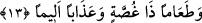

ifâde etmektedir. Çünkü Allah’ın kendi nezdinde bulunan şiddetli azap verme
sebeplerini sıralaması kâfirlerden intikam alma noktasında gücünü beyân etmesi
hükmündedir. Kâfirler dünyada nimetlerden yararlanmakta ve hiçbir şeye
aldırmamaktadırlar. Oysa güçlü olup âhirette intikam alacak olan Allah katında
kâfirlerin nimetlenmelerinin tam tersi azap mevcuddur.
“Cahiym” büyük ateş demektir. Keşşaf’ta ifâde edildiğine göre cahiym; tutuşturulması
ve harâreti çok şiddetli ateş demektir.
13. Boğazdan geçmez bir yiyecek ve elem verici bir azap vardır.
“Boğazdan geçmez bir yiyecek” Boğaza takılan, kayıp gitmeyen yiyecek demektir.
Öyle bir yiyecektir ki ne mideye iner ve ne de boğazdan ağıza geri gelir, tıpkı diken ve
zakkum gibi yiyeceklerdir. Bu ikisi dünyada iken kendilerini yiyen canlıları öldüren
zehirli iki bitki türüdür. Yenmeleri çok iğrençtir. Dünyadaki diken ve zakkumu böyle
olursa, acaba âhiretinki nasıl olur! Bu iki bitki cennetliklerin âfiyet içerisinde
yemelerine karşılık olarak getirilmiştir. Kâfirler bu iki acı şeyi yemekle mükellef
tutulacaklardır. Çünkü onlar dünyada iken Allah’ın nimetlerini yemişler, fakat bunlara
karşı şükretmeyip nankör davranmışlardı.
“Ve elem verici bir azap vardır.” Bu bir başka azap çeşididir ve buna dayanmak
mümkün değildir. Nasıl olduğunu kavramak da imkânsızdır. Nitekim âyette kelimenin
elif lamsız “nekre” getirilmesi bunu göstermektedir. Bütün bunlar kâfirler için
hazırlanmış ve konmuştur. Önceki âyette kâfirler için yakıcı bir ateş, boğazdan geçmez
yiyecek gibi azap çeşitleri zikredildi. Burada tekrar azaptan bahsedilmesi bunların
dışında diğer azap çeşitlerini ifâde etmesi içindir. Tefsir kitaplarında yer aldığına göre;
bu âyet-i kerîme nâzil olunca Peygamber (s.a.) Efendimiz baygın olarak yere düşmüştür.
Rivâyet olunduğuna göre Hasan Basrî (k. s) bir gün oruçlu olarak akşam eder.
Kendisine yiyecek getirilir ve bu âyet-i kerîme arz olunur. Hasan, yemeği getirene;
“kaldır onu” der. Bu yemek ikinci gün tekrar Hasan’in önüne getirilir ve yine bu âyet-i
kerîme arzolunur. Hasan yemeği getirene tekrar “kaldır onu” der. Üçüncü günde aynı
şeyler tekerrür eder. Bu durum Sâbit Benâni, Yezid Dabbî ve Yahya Bekkâ’ya haber
verilir. Bu kişiler Hasan Basrî’ye gelirler. Hasan un çorbasından yiyinceye kadar
yanından ayrılmazlar.
Bil ki âhirette rûhânî azap üç çeşit olacaktır.
a- İnsanın arzu duyduğu şeylerden ayrı düşmesinden kaynaklanan iç yangısı
b- Çirkin fiillerin utancından kaynaklanan rezil rüsvaylık,
c- Sevilen şeylerin elden gitmesinden duyulan hasrettir.
Sonra bu azapların ardından cismânî ateşin insana verdiği azaplara sıra gelir. Bunlar
hızy, hacle ve fâdıh’tır. Hızy; züll/zillet, hakâret/hakirliktir. Hacle; utanma, hayâdan